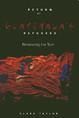

Survivors of Guatemala's violent unrest rebuild their community in the face of political and economic challenges
Survivors of Guatemala's violent unrest rebuild their community in the face of political and economic challenges


 Survivors of Guatemala's violent unrest rebuild their community in the face of political and economic challenges
Survivors of Guatemala's violent unrest rebuild their community in the face of political and economic challenges

|  |
Return of Guatemala's RefugeesReweaving the TornClark Taylorpaper EAN: 978-1-56639-622-6 (ISBN: 1-56639-622-0) |
"A very readable account of a hopeful development in a land where the main story seemed to be the slaughter of innocent civilians. Taylor's work advances what we know and is relevant not only to Guatemala but to the struggle for peace, democracy, human rights, development, and basic decency."
—Phillip Berryman, author of Stubborn Hope
On February 13, 1982, the Guatemalan army stormed into the remote northern Guatemala village of Santa María Tzejá. The villagers had already fled in terror, but over the next six days seventeen of them, mostly women and children, were caught and massacred, animals were slaughtered, and the entire village was burned to the ground.
Twelve years later, utilizing terms of refugee agreements reached in 1982, villagers from Santa María who had fled to Mexico returned to their homes and lands to re-create their community with those who had stayed in Guatemala. Return of Guatemala's Refugees tells the story of that process. In this moving and provocative book, Clark Taylor describes the experiences of the survivors-both those who stayed behind in conditions of savage repression and those who fled to Mexico where they learned to organize and defend their rights. Their struggle to rebuild is set in the wider drama of efforts by grassroots groups to pressure the government, economic elites, and army to fulfill peace accords signed in December of 1996.
Focusing on the village of Santa María Tzejá, Taylor defines the challenges that faced returning refugees and their community. How did the opposing subcultures of fear (generated among those who stayed in Guatemala) and of education and human rights (experienced by those who took refuge in Mexico) coexist? Would the flood of international money sent to settle the refugees and fulfill the peace accords serve to promote participatory development or new forms of social control? How did survivors expand the space for democracy firmly grounded in human rights? How did they get beyond the grief and trauma that remained from the terror of the early eighties? Finally, the ultimate challenge, how did they work within conditions of extreme poverty to create a grassroots democracy in a militarized society?
Excerpt available at www.temple.edu/tempress
"Using the Ixcan village of Santa Maria Tzejá as his case study, Clark Taylor makes understandable the complex process of the Guatemalan refugee return, the factors inhibiting or encouraging reintegration, and the changes wrought in the community and the region by the returnees. This is a clear, readable and interesting contribution to the (thus far) meager Literature on the refugee return situation. Taylor concludes with a strong call to action and gives resources for further education and work."
—Marilyn M. Moors, National Coordinator, Guatemala Scholars Network
Preface
Introduction
1. Torn by Terror
2. Reweaving the Pieces: Culture of Fear/Culture of Learning
3. The Contextual Loom: The Peace Accords, Civil Society, and the Powerful
4. Clash of Patterns: From Mexico and Guatemala
A Pictorial
5. Resources for Reweaving: The Perils of Development
6. Human Rights: The Color of Life
7. The Gray of Frozen Grief: Resolving the Trauma of Memory
8. Tearing Still? The Army in Peacetime
9. Weaving the Future: What Needs to Be Done and How To Get Involved
Appendixes
A. U.S. Groups Providing Resources on Guatemala and Support for the Peace Process
B. Chronology of Guatemalan History
C. Chronology of the Guatemalan Peace Process
Acronyms
Notes
Bibliography
Index
Clark Taylor is Associate Professor of Latin-American Studies in the College of Public and Community Service, University of Massachusetts at Boston. He is also chair of the board of the National Coordinating Office on Refugees, Returnees and Displaced of Guatemala (NCOORD), and was a founding member of Witness for Peace's Guatemala Committee. With his wife, he has been co-leader of a partnership project between his local church and the village of Santa María Tzejá for the past ten years.
Latin American/Caribbean Studies
© 2015 Temple University. All Rights Reserved. This page: http://www.temple.edu/tempress/titles/1393_reg.html.